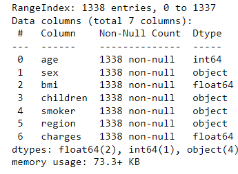
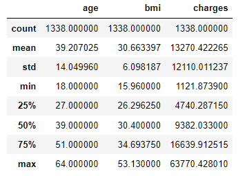
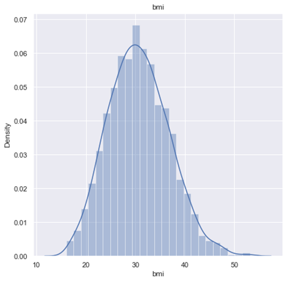
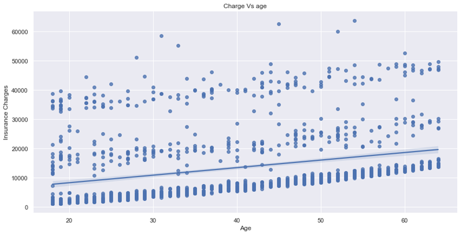
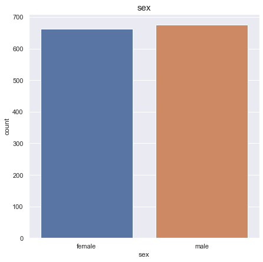
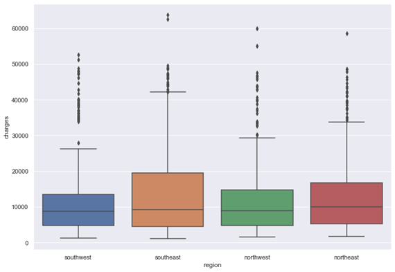
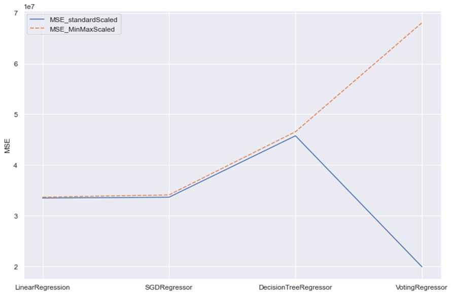
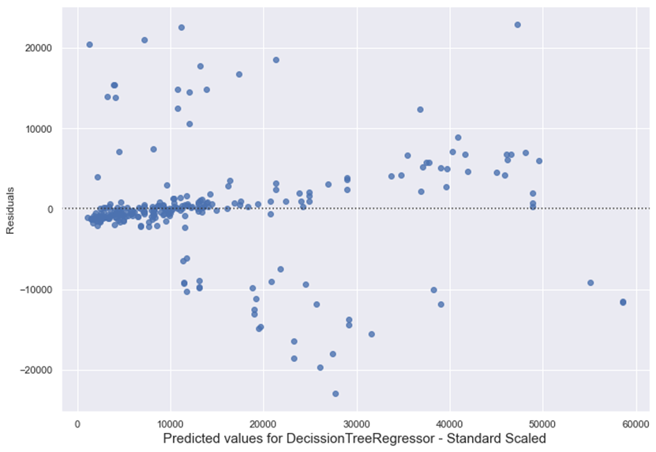

Data science applied on health Insurance data
Intro
In this project, I aimed to showcase the power
of data science in solving real-world problems in the insurance industry.
Utilizing a dataset sourced from Kaggle,
I delved into the detailed information of
insurance customers, including their age, sex, body mass index (BMI), number of
children, smoking status, and region. By analyzing these data points, we gain
valuable insights into customer behavior and the factors that contribute to
their insurance charges. This knowledge can be used to create insurance plans
and marketing campaigns that target specific demographics, ultimately
increasing affordability and accessibility for all. Additionally, this dataset
also presents an opportunity to explore deeper questions and build prediction
models to estimate charges for various situations, further enhancing the
effectiveness of insurance solutions. Overall, this project demonstrates the
potential of data science as a tool for finding data-driven solutions in the
insurance industry. The ultimate goal would be finding and training the best
predictor model regarding to estimation of charges for test uses.
In this article, we will be implementing
various regression models and different types of scaling methods
on the data and comparing the results. This approach allows us to evaluate the
performance of different models and determine the most appropriate one for our
specific use case. By comparing the results of different scaling methods, we
can also determine the best approach for handling the data, which can greatly
impact the accuracy of the model. Through this process, we aim to optimize the
performance of our model and gain a deeper understanding of the data
Exploratory data analysis on data.
The foundation of any successful data science
project is a thorough investigation of the data at the onset. This initial
exploration allows for a better understanding of the data source, as well as
the business insights it holds. By gaining knowledge about the nature of the
business, the entire data mining process, and the expectations for the data, we
can set a clear direction for the project and ensure that it aligns with the
overall goals and objectives. This step is crucial in ensuring the success of
the project and should not be overlooked. In short, data investigation is a
vital step in any data science project, providing valuable insights and
direction for the project's success.
At the start of the project, I investigated
the data to identify any potential issues or inconsistencies. This includes
checking for null values and addressing any problems found in the data.
Additionally, it is important to become familiar with the data types and
categorize them accordingly, such as distinguishing between categorical and
numerical values. This step not only helps to identify any potential problems
in the data, but also enables a better understanding of the data, laying the
foundation for accurate and effective data analysis. This step is a fundamental
part of any data science project, and it is important not to overlook the
importance of data investigation and familiarization.
I start the data manipulation with use of
python and necessarily libraries as following
import numpy as np
import pandas as pd
import seaborn as sns
import matplotlib.pyplot as plt
Here is a brief description of the data situation.
<code>
df.info()
df.describe()
</code>

The data set looks clear and there is no null
value, how ever based on observations, I decided to separate categorical and
numeric columns for better analysis in next steps as following:
<code>
categorical = [column for column in df.columns
if df[column].dtype == "O"]
numeric = [column for column in df.columns if
column not in categorical]
</code>

Based on the results of our analysis, it has
been concluded that the Body Mass Index (BMI) is normally distributed, and no
outliers were identified in any of the numeric columns. Furthermore, the
charges column was found to be right-skewed, as previously determined by
comparing the mean, mode, and median of the charges column through the use of
the describe method applied to the data. These findings provide valuable
insights into the distribution of the data and inform any necessary actions to
ensure the integrity and accuracy of the analysis. And for further modeling
those values needs to be scaled which we going to discuss about.
Feature selection
In continuation of our analysis, further
exploration will be conducted on the data to identify the features that have
the most impact on the target value, in this case, the charges. This step is
critical in understanding the underlying relationships between the features and
target variable, allowing us to make data-driven decisions and optimize the
performance of our model. By applying advanced analytical techniques, we aim to
gain a deeper understanding of the data and improve the accuracy of our
predictions.

Based on the results of our analysis, a linear
relationship between Body Mass Index (BMI) and charges as well as age and
charges has been determined. This finding provides a deeper understanding of
the underlying relationships between these variables and can inform further
actions to optimize the performance of our model. The linear behavior
identified in this analysis is crucial in developing accurate predictions and
understanding the factors that contribute to the charges
Categorical values,
In order to thoroughly investigate the
potential issue of imbalance in categorical variable data, a thorough analysis
is performed to demonstrate the ratio of value counts for each categorical
column. This method allows for a comprehensive understanding of the distribution
of values within the dataset and can inform further actions to address any
imbalance issues. By conducting this analysis, we are able to gain valuable
insights and make data-driven decisions to ensure the integrity and accuracy of
the data
The results would be as following :

A
comprehensive distribution analysis is performed on numeric columns to
thoroughly examine the data for any outliers or anomalies. This method allows
for a detailed understanding of the distribution of values within the dataset
and can inform further actions to address any identified issues. By conducting
this analysis, we are able to gain valuable insights and make data-driven
decisions to ensure the integrity and accuracy of the data.
When
analyzing the distribution of data with categorical values, box plots are a
valuable tool to use. These plots provide a clear representation of the
distribution of values within a dataset, allowing for the identification of
outliers and patterns. They are also useful for comparing the distribution of
multiple groups or categories, making it easier to detect any significant
differences. By utilizing box plots in our analysis, we can gain a deeper
understanding of the data and make data-driven decisions to optimize the
performance of our model.

Based on
the analysis, it has been determined that there is a high variance in the
charges above 40000. As a result, further analysis will be conducted
specifically on that subset of data to gain a deeper understanding of the
distribution and any potential outliers. This approach allows for a more
focused analysis and can inform actions to optimize the performance of our
model. By isolating and analyzing this specific subset of data, we can gain
valuable insights into the underlying relationships and patterns.
Dummy
variables.
In order to effectively analyze and train our
data, it is necessary to convert our categorical variables to numerical values.
The following code snippet is utilized for this purpose, allowing for more
accurate and efficient analysis and modeling. This step is crucial in preparing
the data for machine learning algorithms, which typically work with numerical
data, and enables a better understanding of the underlying relationships
between the features and target variable.
df.replace({"sex":{"male":1,"female":2},
"smoker":{"yes":1,"no":0}},inplace=True)
df = pd.concat([df,
pd.get_dummies(df['region'])], axis=1).drop(['region'],axis=1)
df = pd.concat([df,
pd.get_dummies(df['children'])], axis=1).drop(['children'],axis=1)
In addition to the previous analysis, a
correlation heat map has been generated to provide an overview of the
relationships between all of the results values. This visualization technique
is useful for identifying patterns and correlations in the data, and can inform
further actions to optimize the performance of our model. The correlation heat
map provides a clear and intuitive representation of the data, allowing for
quick and easy identification of the most relevant features and relationships
Scaling:
The objective of this approach is to compare
the performance of our models when using standard scaler and min-max scaler. By
implementing these two different scaling methods, we aim to gain a deeper
understanding of how the scaling affects the performance of the model and
identify the most appropriate method for our specific use case. By
investigating the differences in performance, we can make data-driven decisions
to optimize the accuracy of our model and ensure the integrity of the analysis.
In this analysis, we will be utilizing the
sklearn library in Python for scaling the data. This library provides a wide
range of tools for data pre-processing, including the Standard Scaler method.
By using this library, we can easily and efficiently apply the scaling method
to our data, allowing for a more accurate and robust analysis. The use of
industry standard libraries such as sklearn ensures that the results are
reliable and widely accepted in the field.
from sklearn.model_selection import train_test_split
from sklearn import metrics
from sklearn.preprocessing import
OneHotEncoder, StandardScaler, MinMaxScaler
#Scaling with StandardScaler
s_df = s.fit_transform(df[['bmi','age']])
s_df = pd.DataFrame(s_df,
columns=df[['bmi','age']].columns.values)
df1 = df.drop(columns=['age','bmi'],axis=1)
df1 = pd.concat([df1, s_df], axis=1)
# scaling with MinMaxScaler
mm = MinMaxScaler()
mm_df = mm.fit_transform(df[['bmi','age']])
mm_df = pd.DataFrame(mm_df,
columns=df[['bmi','age']].columns.values)
df2 = df.drop(columns=['age','bmi'],axis=1)
df2 = pd.concat([df2, mm_df], axis=1)
In following, sklearn library is utilized in
Python to separate our model into training and testing groups for validation
purposes. This approach is widely accepted in the field of machine learning and
allows for a more accurate assessment of the model's performance. Given the
limited size of our dataset, with only 3000 records, a simple split of the data
into training and testing groups with a ratio of 20% will suffice for this
case. By using this method, we can ensure the integrity and robustness of our
analysis while following best practices in the field.
X = df2.drop(['charges'],axis=1)
y = df2['charges']
X_train2, X_test2, y_train2, y_test2 =
train_test_split(X, y, test_size = 0.2,random_state=42)
Prediction models
This issue would fall under the category of
supervised learning, specifically regression. In the initial phase, several
models will be selected for examination in terms of performance. These include
LinearRegression, DecisionTreeRegressor, and SGDRegressor. The R2 score and
mean squared error metrics will be utilized to evaluate the models'
performance. Which sklearn library is used for that.
All the models are trained on traindata both
once with applying MinMaxScaler and Once with StandardScaling method,
The results of R2 score and MSE is calculated
based on prediction of Test data as follow:
Ensemble method (Voting regression):
Voting regression, ensemble method is chosen
to increase the accuracy of prediction. It's a simple yet powerful method that
can be used to improve the accuracy of a regression model by combining the
predictions of multiple models. It can also be used to reduce the variance of a
single model by combining multiple models with different architectures. GradientBoostingRegressor,
RandomForestRegressor and linear regression are chosen to be used on our
VotinRegressor as follow:
reg1 = GradientBoostingRegressor(random_state=1)
reg2 = RandomForestRegressor(random_state=1)
reg3 = LinearRegression()
ereg = VotingRegressor(estimators=[('gb',
reg1), ('rf', reg2), ('lr', reg3)])
ereg = ereg.fit(X_train, y_train)
A significant increase in R2_Score and
decrease in MSE in case of using Standard scaled data announce the advantage of
using VotingRegressor in this particular problem combine with StandardScaler as
follows.

Visualization on performance of all models in
two situation of Standard scaled and MinMaxScaled indicates that the best
results would be in case of using Votinregressor model on Standard scaled
method.
Residual Calculation :
In a regression model, the residual is the
difference between the observed value of the dependent variable (y) and the predicted
value of the dependent variable (y hat) given a set of independent variables
(x). The residual is calculated by subtracting the predicted value of y (y hat)
from the actual value of y (y) for each observation in the dataset.
Residuals are used to evaluate the performance
of a regression model. A good regression model should have residuals that are
randomly distributed around zero, with no patterns or trends. If the residuals
exhibit patterns or trends, it indicates that the model is not capturing all of
the information in the data, and the model may need to be modified or refined.
Residual calculation for all the models used
in this problem are visualized as follows:

Conclusion:
Based on the analysis conducted on the
four models mentioned above and considering the limited amount of data
available for this specific problem, it is recommended to implement a Voting
Regressor approach for constructing a predictor. To optimize the performance of
the model, it is suggested to consider the following:
Utilizing cross-validation techniques
to evaluate the model's performance and prevent overfitting.
Fine-tuning the hyperparameters of the
individual models through techniques such as grid search or random search to
optimize their performance.
Incorporating additional relevant data
and features, if available, to improve the model's ability to capture the
underlying relationship.
Regularly evaluating and monitoring
the model's performance on new data to ensure its continued effectiveness."